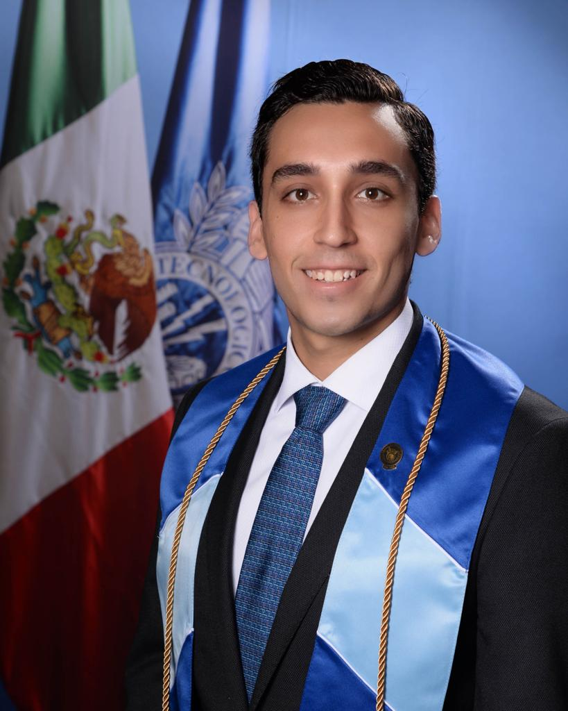

Rodolfo Casillas Sánchez

Summary
Electronic Engineer with experience working in microprocessor and server validation, as well as development, debug and maintenance of scripts.
Education
-
Bachelor in Electronics Engineering
Tecnológico de Monterrey Campus Guadalajara | August 2017 - June 2022
- Graduated with Academic Excellence Award
- Highest average grade of the bachelor degree (95/100)
- International Experience
- Hochschule Karlsruhe University of Applied Sciences in Germany
Work Experience
-
System Validation Engineer
Intel Corporation | July 2022 - April 2023
- Responsible for setting up the systems to be ready to execute tests
- Execution and validation of tests for processors
- Responsible for scrips used in execution and automation of processes
-
Cluster Validation Intern
Intel Corporation | June 2021 - June 2022
- Full time intern for a year with the At Scale Cluster Validation Team
- Learning the At Scale validation process of servers and processors
- Running content and analyzing results for Intel products
- Develop and maintain scrips used by the cluster team
Skills
-
Languages
- Spanish: 100% (native language)
- English: 100% (Toefl ITP 617)
- German: 70% (DAF Level B1)
-
Technical
- Verilog/System Verilog
- Python
- C/C++
- Altera FPGAs
- Eagle
- Machine Learning
- Linux/Bash
- Git
- Kubernetes
- Docker
Awards & Honors
-
Academic Talent Scholarship
- Scholarship awarded to students with remarkable academic performance to study a bachelors degree at Tecnológico de Monterrey Campus Guadalajara.
-
DIVR Science Award Nomination
- Nominated as one of the best VR projects at university level in Germany for a VR game as a rehabilitation application in arm injuries.
Other